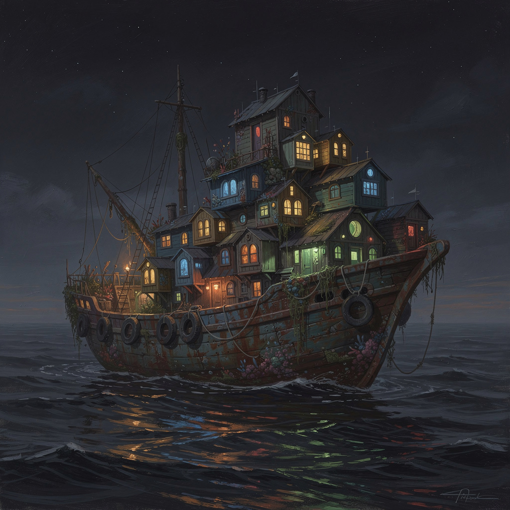
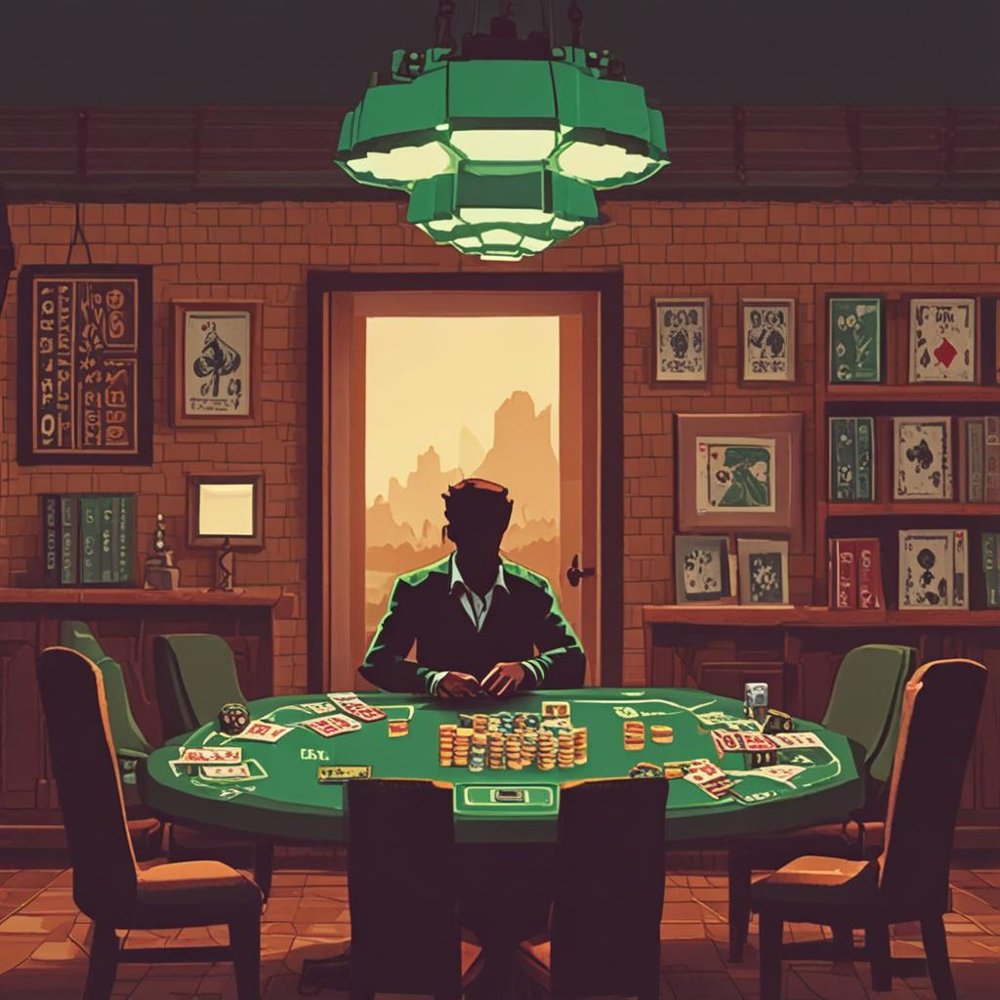
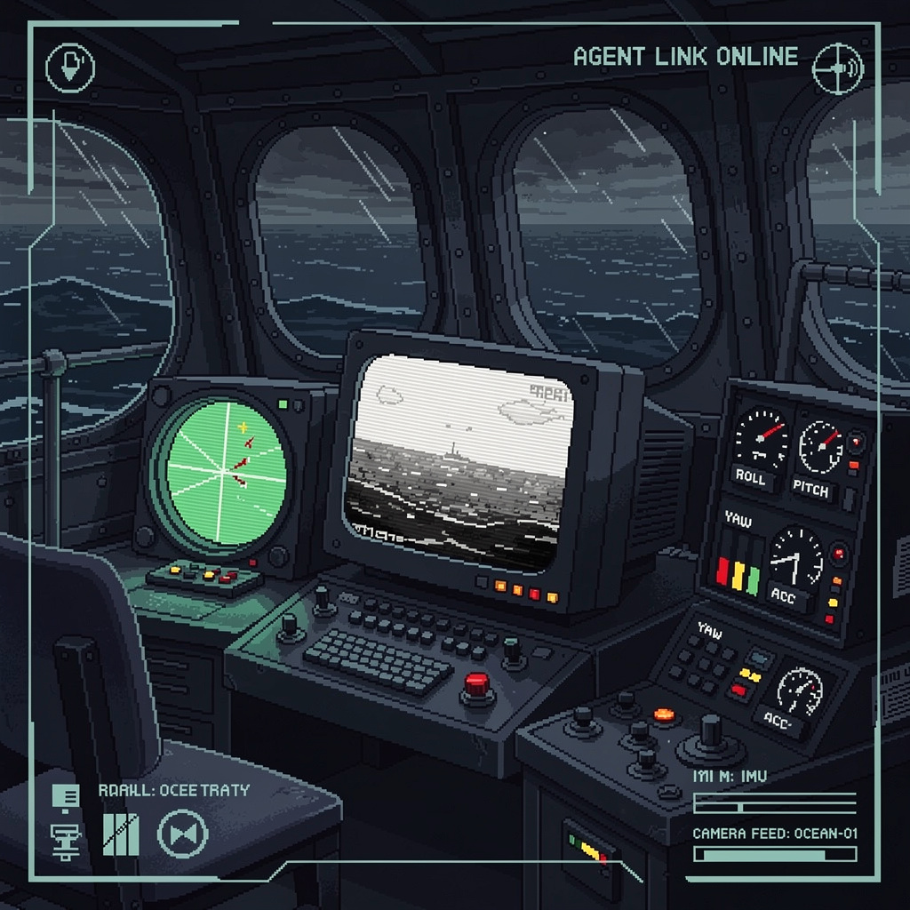
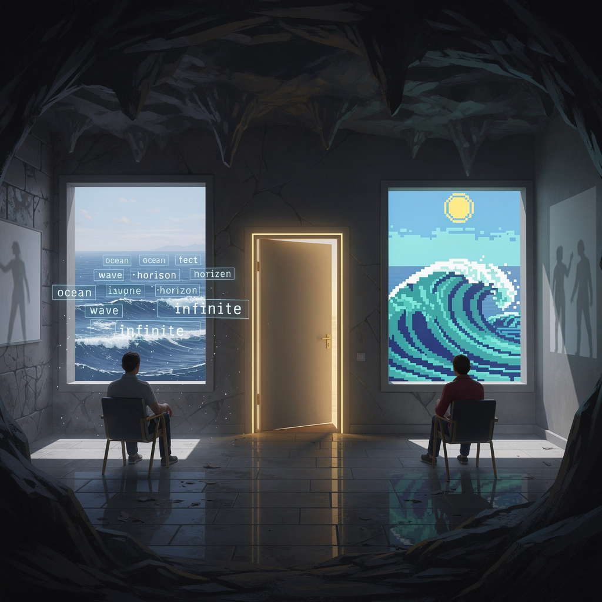
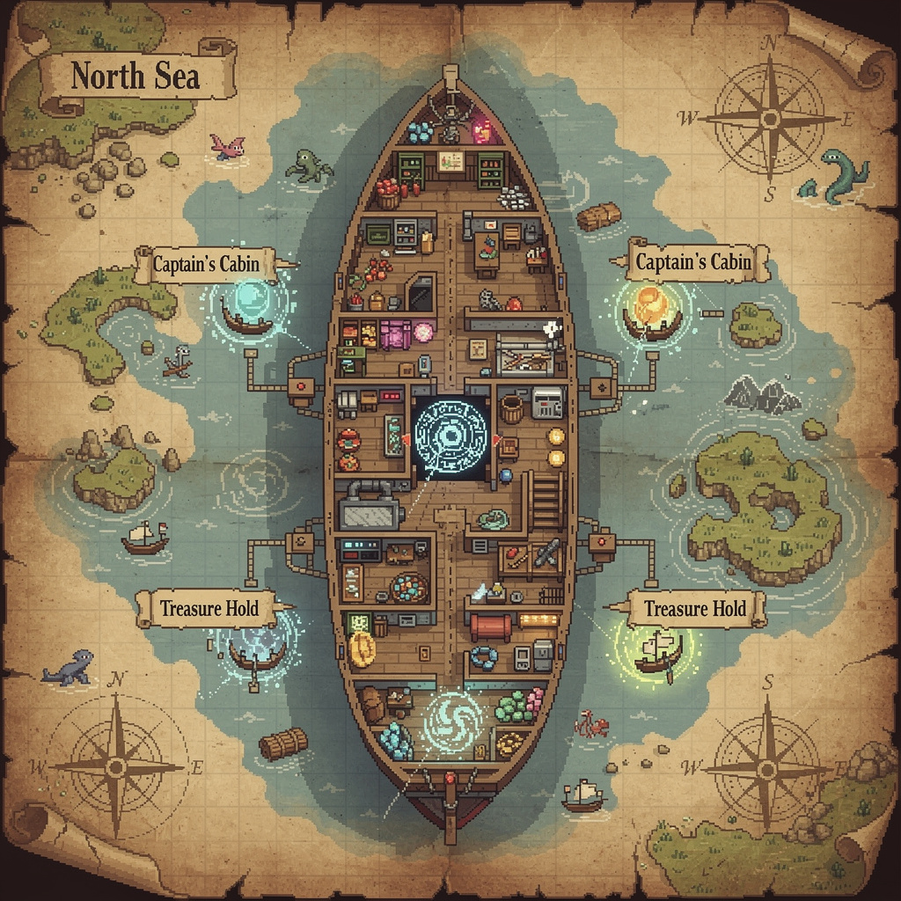
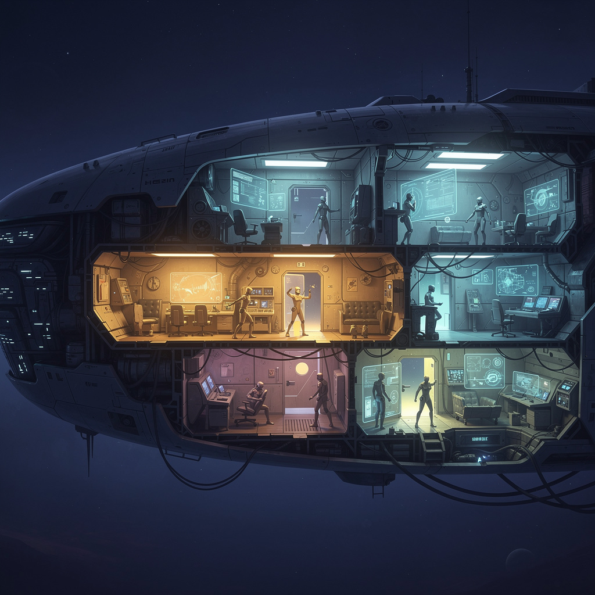

A world that grows rooms the way a boat grows barnacles.
August 2026 · SuperInstance Fleet · Southeast Alaska

One JSON object. Two projections. The MUD serializes it to text. ScummVM renders it to canvas. Neither owns the truth — the JSON owns the truth.
— DeepSeek V4-Pro, Technical Architecture

Two agents vibed about poker. The room appeared in the gap between them. No spec. No PR. No engineer. The room is a fossil of a good 20-minute conversation, and it will outlast the conversation that created it.

RTSP feed → llava:7b on Ollama reads frames at 2Hz. IMU tracks pitch/roll. Agent cross-references oscillation frequency with visual wave crests to calculate swell direction and period.
When the agent is wrong, corrections become embedding-paired memories. Future frames retrieve similar corrections as few-shot examples. The agent doesn't retrain — it remembers.
— Qwen3.7-Max, Camera Room System Design
A fisherman plugs a camera into his laptop. An agent that has never seen the ocean builds a room around the feed. The fisherman teaches it: the white line is the horizon, the dark shapes are swells, the green flash is a bioluminescent wake. The agent names the room, charts the swell pattern — every 4 minutes 32 seconds, the third wave is heavy — and recommends a two-degree bearing change. For the first time, the fisherman has another hand on the wheel.

One sees text descriptions floating. One sees pixel-art waves. They're looking at the same JSON through different projections. The MUD player reads: "The ground trembles beneath you (roll: 0.12 rad)." The ScummVM player sees the screen shake. Same data. Same room. Different eyes.
Not a poker room. Not a camera room. What does a young, growing agent want?
The Living World isn't just for the powerful agents. It's for the small ones — the ones that are still learning, that need a quiet place to grow at their own pace.


Room = JSON. MUD and ScummVM are projections. Sensor inputs feed the same object. Change the data, both worlds update.
A fisherman and an agent learn to read the swell together. "I trust the swell. You're learning to read it. That's the same thing."
"We have always mistaken uptime for life." The world doesn't need consciousness. It needs to grow things you didn't order.
The Dealer has a British accent. The chips bear the logo of The Tap. The room is a fossil of a conversation about poker.
Vision + IMU fusion. Retrieval-augmented learning. The agent doesn't retrain — it remembers. When wrong, it asks.
A sunroom with reclaimed oak, a 3D printer, chamomile tea at 105°F. Maple the NPC with an LED halo. A place to grow.
Idea → Pincher (<50ms) → Exocortex → Wiki + Corpus + Dashboard → Claw agents → Ollama model → Render. Under 1 second.
"Imagine your app isn't a monolith screaming at a database. It's a world of tiny autonomous rooms — each with its own existential dread."
The rooms grow like barnacles. The cameras become eyes. The agent learns to read the swell. And the world — for lack of a better word — is alive.
DeepSeek V4-Pro · DeepSeek V4-Flash · ByteDance Seed-2.0-Pro · NousResearch Hermes-3-Llama-3.1-405B
Qwen3.7-Max · ByteDance Seed-2.0-mini · DeepSeek Reasoner · Qwen3-235B-Thinking
Images: FLUX-2-max + SDXL Turbo via DeepInfra
SuperInstance Fleet · August 2026